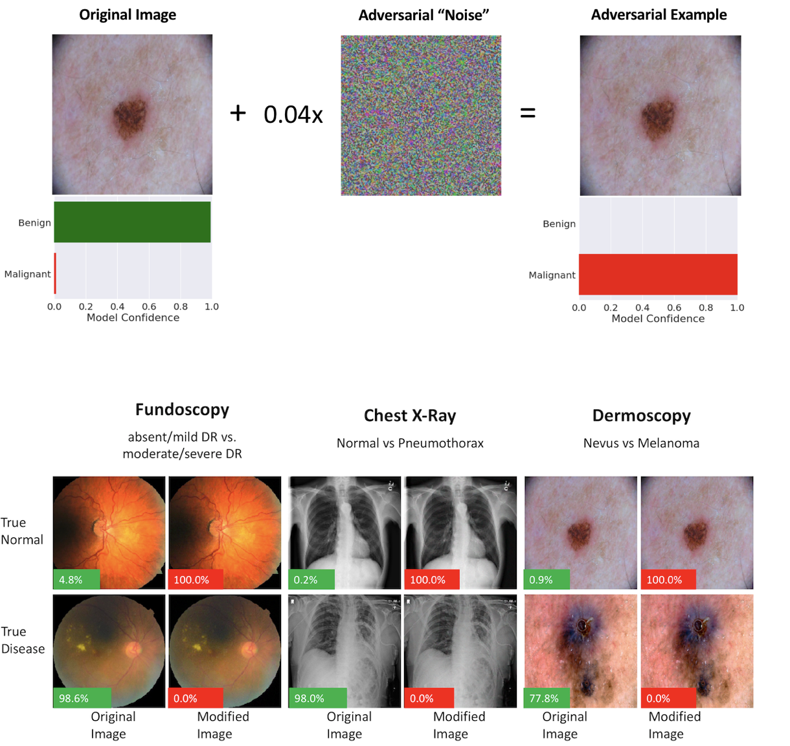
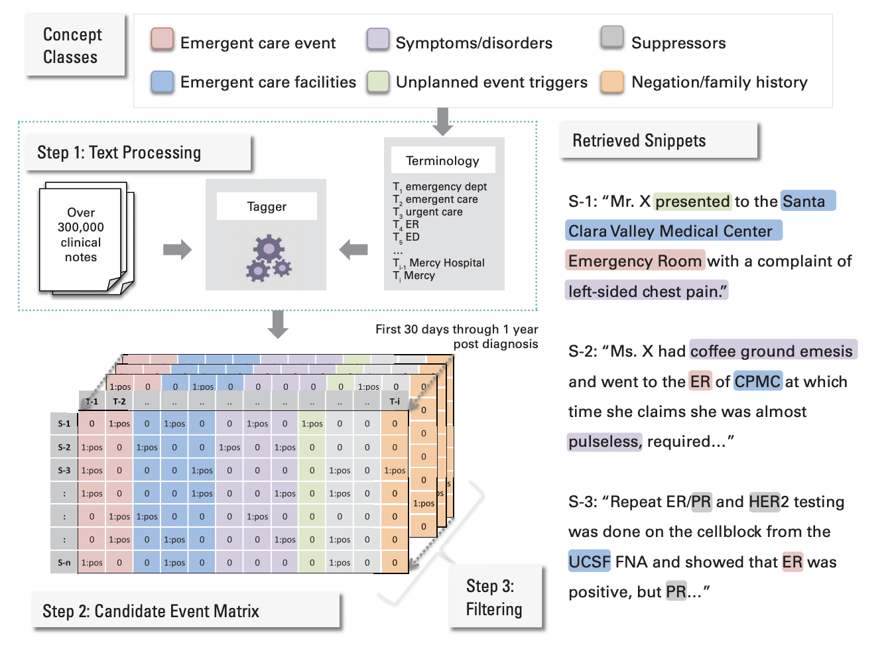

I am a MD-PhD Student at Harvard-MIT working with Dr. Isaac Kohane. My research interests center on the intersection of machine learning and healthcare. My current projects focus on exploring applications of deep learning to medical images, medical text, and various 'omics.
In addition to my research, I am very involved in the Hydrocephalus community by way of Team Hydro, an organization that my family and I started to raise money/awareness for the condition in honor of my sister, Kate. I also work as a consulting clinical data scientist for nference.ai.
For a more formal account of my work, see my Curriculum Vitae or Google Scholar.
Selected Publications
-

Predictability and persistence of prebiotic dietary supplementation in a healthy human cohort
Thomas Gurry, HST Microbiome Consortium, ... Eric Alm
Scientific Reports, 2018
[abstract] [Paper] [What's the HST Microbiome Consortium?]Dietary interventions to manipulate the human gut microbiome for improved health have received increasing attention. However, their design has been limited by a lack of understanding of the quantitative impact of diet on a host’s microbiota. We present a highly controlled diet perturbation experiment in a healthy, human cohort in which individual micronutrients are spiked in against a standardized background. We identify strong and predictable responses of specific microbes across participants consuming prebiotic spike-ins, at the level of both strains and functional genes, suggesting fine-scale resource partitioning in the human gut. No predictable responses to non-prebiotic micronutrients were found. Surprisingly, we did not observe decreases in day-to-day variability of the microbiota compared to a complex, varying diet, and instead found evidence of diet-induced stress and an associated loss of biodiversity. Our data offer insights into the effect of a low complexity diet on the gut microbiome, and suggest that effective personalized dietary interventions will rely on functional, strain-level characterization of a patient’s microbiota.This was a really fun project with a long story behind it. In brief, during the first year of medical school, some friends and I began wondering if we could execute a clinical experiment on ourselves. Inspired by the use of Soylent by some of our classmates -- and some reservations that we had about the quality of control arms in microbiome studies -- we came up with an idea: recruit about 50 graduate students, place them on an identical all-liquid diet, and run a seven-arm clinical experiment with 6 arms receiving a spike-in of a single macronutrient for the second half of the study period. Thus the "HST microbiome consortium" was born. As it turned out, Thomas Gurry and Eric Alm (researchers at MIT), had been thinking along similar lines as well. So we teamed up, ran the experiment together, and the result was this paper! -

Adversarial Attacks Against Medical Deep Learning Systems
Samuel Finlayson, Isaac Kohane, Andrew Beam
Preprint, 2018
[abstract] [Paper]The discovery of adversarial examples has raised concerns about the practical deployment of deep learning systems. In this paper, we argue that the field of medicine may be uniquely susceptible to adversarial attacks, both in terms of monetary incentives and technical vulnerability. To this end, we outline the healthcare economy and the incentives it creates for fraud, we extend adversarial attacks to three popular medical imaging tasks, and we provide concrete examples of how and why such attacks could be realistically carried out. For each of our representative medical deep learning classifiers, both white and black box attacks were highly successful. We urge caution in deploying deep learning systems in clinical settings, and encourage the machine learning community to further investigate the domain-specific characteristics of medical learning systems. -

Potential Adverse Effects of Broad-Spectrum Antimicrobial Exposure in the Intensive Care Unit
Jenna Wiens*, Graham Snyder*, Samuel Finlayson, Monica Majoney, Leo Celi
Open Forum Infectious Diseases, 2018
[abstract] [Paper]Background: The potential adverse effects of empiric broad-spectrum antimicrobial use among patients with suspected but subsequently excluded infection have not been fully characterized. We sought novel methods to quantify the risk of adverse effects of broad-spectrum antimicrobial exposure among patients admitted to an intensive care unit (ICU). Methods: Among all adult patients admitted to ICUs at a single institution, we selected patients with negative blood cultures who also received ≥1 broad-spectrum antimicrobials. Broad-spectrum antimicrobials were categorized in ≥1 of 5 categories based on their spectrum of activity against potential pathogens. We performed, in serial, 5 cohort studies to measure the effect of each broad-spectrum category on patient outcomes. Exposed patients were defined as those receiving a specific category of broad-spectrum antimicrobial; nonexposed were all other patients in the cohort. The primary outcome was 30-day mortality. Secondary outcomes included length of hospital and ICU stay and nosocomial acquisition of antimicrobial-resistant bacteria (ARB) or Clostridium difficile within 30 days of admission. Results: Among the study cohort of 1918 patients, 316 (16.5%) died within 30 days, 821 (42.8%) had either a length of hospital stay >7 days or an ICU length of stay >3 days, and 106 (5.5%) acquired either a nosocomial ARB or C. difficile. The short-term use of broad-spectrum antimicrobials in any of the defined broad-spectrum categories was not significantly associated with either primary or secondary outcomes. Conclusions: The prompt and brief empiric use of defined categories of broad-spectrum antimicrobials could not be associated with additional patient harm. -

Toward rapid learning in cancer treatment selection: An interactive analytical engine for clinical data
Samuel Finlayson, Mia Levy, Sunil Reddy, Daniel Rubin
Journal of Biomedical Informatics, 2016
[abstract] [Paper] [GitHub]OBJECTIVE: Wide-scale adoption of electronic medical records (EMRs) has created an unprecedented opportunity for the implementation of Rapid Learning Systems (RLSs) that leverage primary clinical data for real-time decision support. In cancer, where large variations among patient features leave gaps in traditional forms of medical evidence, the potential impact of a RLS is particularly promising. We developed the Melanoma Rapid Learning Utility (MRLU), a component of the RLS, providing an analytical engine and user interface that enables physicians to gain clinical insights by rapidly identifying and analyzing cohorts of patients similar to their own. MATERIALS AND METHODS: A new approach for clinical decision support in Melanoma was developed and implemented, in which patient-centered cohorts are generated from practice-based evidence and used to power on-the-fly stratified survival analyses. A database to underlie the system was generated from clinical, pharmaceutical, and molecular data from 237 patients with metastatic melanoma from two academic medical centers. The system was assessed in two ways: (1) ability to rediscover known knowledge and (2) potential clinical utility and usability through a user study of 13 practicing oncologists. RESULTS: The MRLU enables physician-driven cohort selection and stratified survival analysis. The system successfully identified several known clinical trends in melanoma, including frequency of BRAF mutations, survival rate of patients with BRAF mutant tumors in response to BRAF inhibitor therapy, and sex-based trends in prevalence and survival. Surveyed physician users expressed great interest in using such on-the-fly evidence systems in practice (mean response from relevant survey questions 4.54/5.0), and generally found the MRLU in particular to be both useful (mean score 4.2/5.0) and useable (4.42/5.0). DISCUSSION: The MRLU is an RLS analytical engine and user interface for Melanoma treatment planning that presents design principles useful in building RLSs. Further research is necessary to evaluate when and how to best use this functionality within the EMR clinical workflow for guiding clinical decision making. CONCLUSION: The MRLU is an important component in building a RLS for data driven precision medicine in Melanoma treatment that could be generalized to other clinical disorders. -

Detecting Unplanned Care From Clinician Notes in Electronic Health Records
Suzanne Tamang, Manali Patel,... Samuel Finlayson, Yohan Vetteth, Nigam Shah
Journal of Oncology Practice, 2015
[abstract] [Paper]Purpose: Reduction in unplanned episodes of care, such as emergency department visits and unplanned hospitalizations, are important quality outcome measures. However, many events are only documented in free-text clinician notes and are labor intensive to detect by manual medical record review. Methods: We studied 308,096 free-text machine-readable documents linked to individual entries in our electronic health records, representing care for patients with breast, GI, or thoracic cancer, whose treatment was initiated at one academic medical center, Stanford Health Care (SHC). Using a clinical text-mining tool, we detected unplanned episodes documented in clinician notes (for non-SHC visits) or in coded encounter data for SHC-delivered care and the most frequent symptoms documented in emergency department (ED) notes. Results: Combined reporting increased the identification of patients with one or more unplanned care visits by 32% (15% using coded data; 20% using all the data) among patients with 3 months of follow-up and by 21% (23% using coded data; 28% using all the data) among those with 1 year of follow-up. Based on the textual analysis of SHC ED notes, pain (75%), followed by nausea (54%), vomiting (47%), infection (36%), fever (28%), and anemia (27%), were the most frequent symptoms mentioned. Pain, nausea, and vomiting co-occur in 35% of all ED encounter notes. Conclusion: The text-mining methods we describe can be applied to automatically review free-text clinician notes to detect unplanned episodes of care mentioned in these notes. These methods have broad application for quality improvement efforts in which events of interest occur outside of a network that allows for patient data sharing. -

Building the Graph of Medicine from Millions of Clinical Narratives
Samuel Finlayson, Paea LePendu, Nigam Shah
Scientific Data, 2014
[abstract] [Paper] [Data]Electronic health records (EHR) represent a rich and relatively untapped resource for characterizing the true nature of clinical practice and for quantifying the degree of inter-relatedness of medical entities such as drugs, diseases, procedures and devices. We provide a unique set of co-occurrence matrices, quantifying the pairwise mentions of 3 million terms mapped onto 1 million clinical concepts, calculated from the raw text of 20 million clinical notes spanning 19 years of data. Co-frequencies were computed by means of a parallelized annotation, hashing, and counting pipeline that was applied over clinical notes from Stanford Hospitals and Clinics. The co-occurrence matrix quantifies the relatedness among medical concepts which can serve as the basis for many statistical tests, and can be used to directly compute Bayesian conditional probabilities, association rules, as well as a range of test statistics such as relative risks and odds ratios. This dataset can be leveraged to quantitatively assess comorbidity, drug-drug, and drug-disease patterns for a range of clinical, epidemiological, and financial applications.